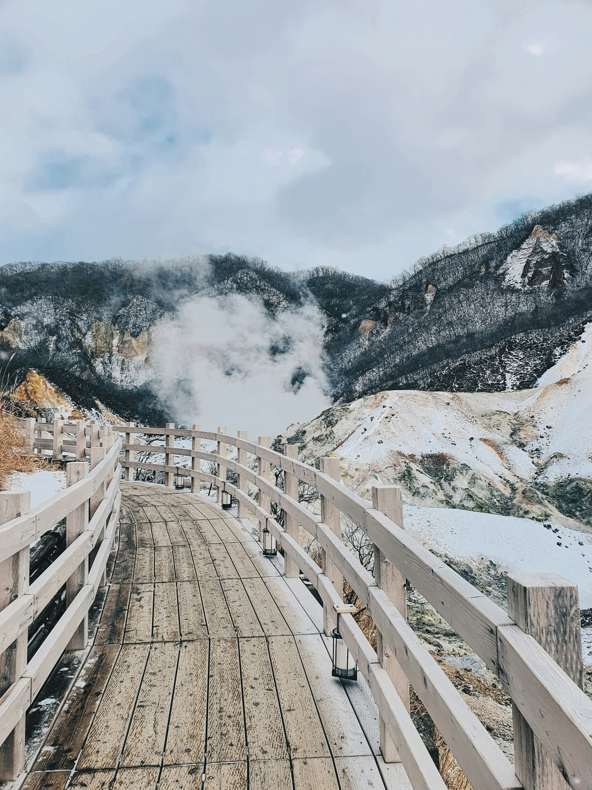
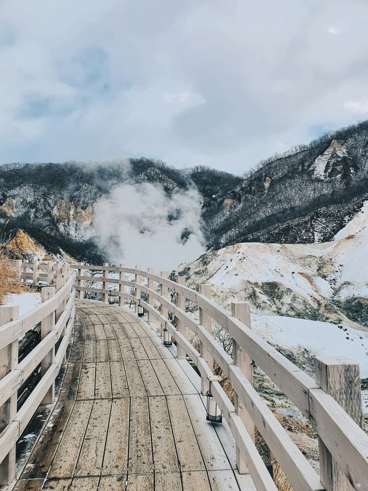

私たちのツアー
OUR TOURS

Tokyo

TOKYO
Neon Dreams & Ancient Traditions
Every futuristic skyscraper next centuries-old temples and traditional tea houses. Experience the electric energy of Shibuya Crossing, explore the serene Senso-ji Temple, from the bustling streets of Harajuku to tranquil gardens of the Imperial Palace. Tokyo offers an intoxicating blend of cutting-edge technology and timeless tradition, where you can witness the harmonious coexistence of modern civilization.
KYOTO
The Soul of Classical Japan
Walk through living history in Japan's cultural heart. Kyoto preserves the elegance and grace of old Japan with over 2,000 temples and shrines. Witness geishas gliding through traditional wooden machiya houses, participate in authentic tea ceremonies, witness golden pavilions reflecting in still ponds, and stroll through thousands of vermillion torii gates at Fushimi Inari. From the Zen rock gardens to the vibrant Gion district, Kyoto offers a journey through Japan's artistic and spiritual heritage.
← learn more about this tour 

HOKKAIDO
Wild Nature & Untamed Beauty
Discover Japan's untamed northern frontier where pristine wilderness meets world-class winter experiences. Hokkaido offers breathtaking natural beauty - from powder snow perfect for skiing to steaming hot springs surrounded by snow-capped mountains. Visit the famous Sapporo Snow Festival, witness the ethereal blue pond, explore the little-known paint the hills scarlet, and savor Hokkaido's renowned seafood and dairy products. Whether you're seeking outdoor adventure or peaceful nature retreats, Hokkaido provides an escape to Japan's most pristine wilderness.
learn more about this tour →OKINAWA
Tropical Paradise with Ryukyu Spirit
Experience Japan's exotic southern islands where turquoise waters meet unique Ryukyuan culture. Okinawa offers a distinct flavor of Japan - pristine white sand beaches, vibrant coral reefs perfect for diving, and a laid-back island atmosphere. Explore ancient Ryukyu castle ruins, discover the longevity secrets of the world's healthiest people, and enjoy unique Okinawan cuisine blending Japanese, Chinese, and Southeast Asian influences. From snorkeling in crystal-clear waters to experiencing traditional Eisa dance, Okinawa presents a different side of Japan - one bathed in sunshine, surrounded by turquoise seas, and steeped in a culture shaped by a rich, independent history in the tropics.
← learn more about this tour